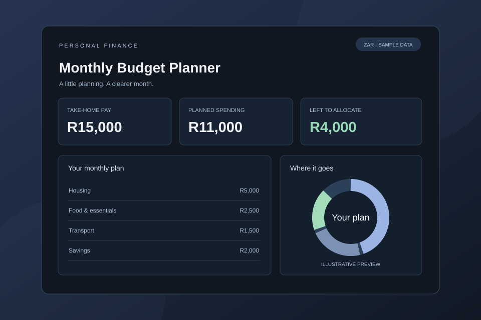
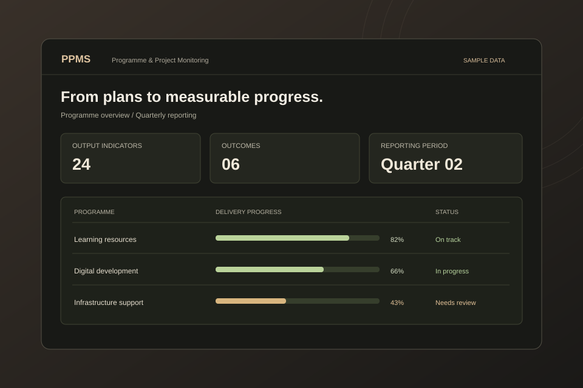

01 / EDUCATION ANALYTICS
01 / EDUCATION ANALYTICS
E-Teaching & Learning Dashboard
Bringing school resources, connectivity, and monitoring into one clearer view.
Explore the case studyData analyst & systems builder
I’m Thembelani Nofumba. I turn data into useful dashboards, thoughtful reporting tools, and systems that make everyday work simpler.
02 / Selected work
Real problems. Practical solutions.
A closer look at the work behind the code.
01 / EDUCATION ANALYTICS
Bringing school resources, connectivity, and monitoring into one clearer view.
Explore the case study
02 / PERSONAL FINANCEA simple way to plan spending, make room for savings, and see what’s left.
Explore the case study
03 / PERFORMANCE MONITORINGSupporting the link between programme reporting, outcomes, and impact.
Explore the case study 04 / FINANCIAL WORKFLOWS
04 / FINANCIAL WORKFLOWS
Turning a spreadsheet-based process into a structured, traceable workflow.
Explore the case studyProject visuals are illustrative previews with sample data. Read each case study for its scope and status.
Visit my GitHub03 / A little about me
I enjoy the space where data, people, and practical problem-solving meet.
At the Eastern Cape Department of Education, I work across data collection, validation, visualisation, and reporting. My focus is helping teams understand what their data is saying — and what to do next.
That often means building the tools around the analysis: a dashboard that makes progress visible, a workflow that improves data capture, or a database that gives reporting a stronger foundation.
I bring technical curiosity and clear communication to the same table, working with people across directorates to make the result useful.
Get the full story in my CV04 / Experience & learning
A foundation in analytics.
Experience putting it into practice.
Eastern Cape Department of Education
eTeaching & Learning Directorate · East London
Always adding to the toolkit
Tools of the trade
05 / Let’s connect
Let’s talk about data, dashboards, and making things work better.
thembelaninofumba@gmail.com